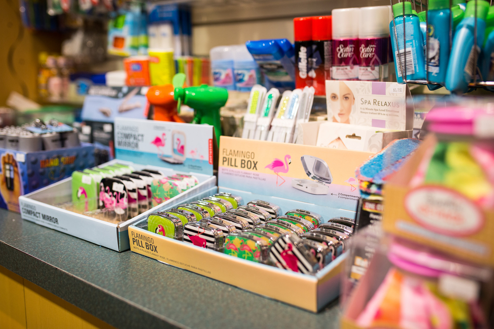
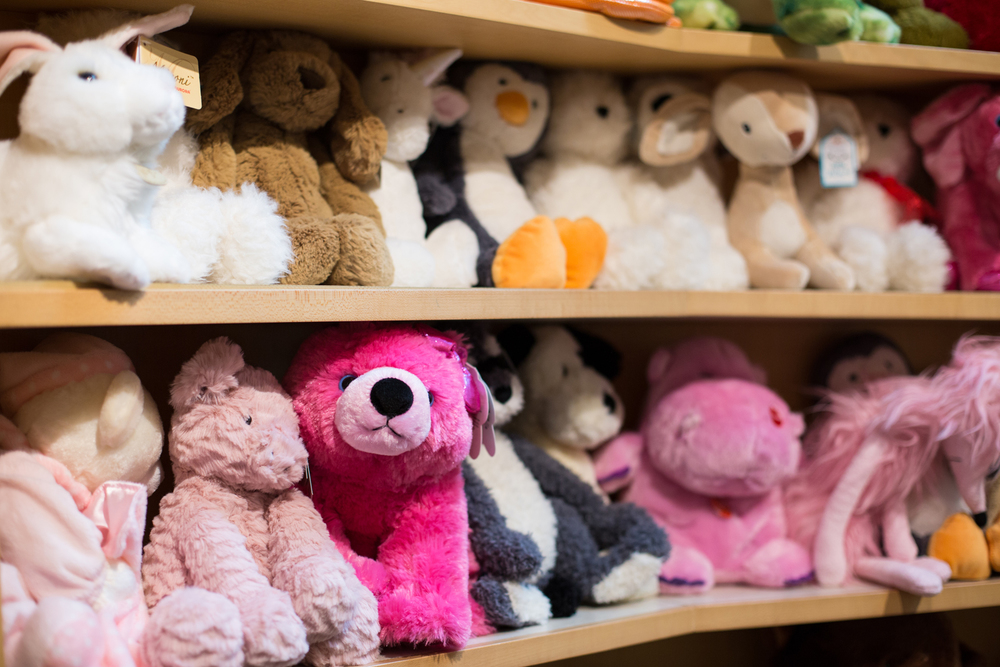

Nexone, a Canadian based paperless solution for the real estate market, is geared towards agents, brokerages, and even admins.
create carousel for all pictures of each website, repree.com nexone.caTong Louie
William Lutsky
> project images?
I really enjoyed this volunteering position for two reasons. The most important reason was the fact that patients from the entire hospital who couldn’t leave various reasons would come down to the store and refresh themselves from the dreary view that a hospital tends to inspire. I would tend to chat to many of the patients and recognize them as I have a static unchanging shift time. This felt like I was making a difference no matter how insignificant in a critical moment of their life. The other reason was the fact that I could enjoy a conversation with not only patients, but doctors, managers and other volunteers alike whilst still very easily maintaining control over the cash register and the line. It was basically a way for me to de-stress from school whilst doing something for the community.
 William Lutsky